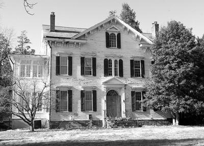

PHOTO ALBUM, GULICK LINE

Major General John W. Gulick, USA
1873-1939. Paternal cousin and descendant of Hendrick Van GULICK who moved to America from Holland 1653.
His father was 1st Lt James W. Gulick CSA, Confederate officer of Goldsboro NC, b. NJ.
Some surprising family resemblance to Professor Henry C. Gulick (father).
Fort Gulick in Panama Canal Zone was named after Major General John W. Gulick.
Mutual Descent from Jochem (ca 1645-1723, Captain of Militia Gravesend Long Island 1705) and (Van Pelt) Gulick... Gulicks owned slaves (cousin? Cornelius Gulick 5
slaves 1830 Franklin Twp Somerset Co NJ just NE of Princeton)
in America in the 19th century in NJ & northern Virginia.
33 Gulick Confederate soldiers listed Civil War
Soldiers NPS site, especially from Virginia. Some officers, plus 4 soldiers in Mosby's Cavalry. Great grandfather Henry F. Gulick was 19th century Democrat.

Luther Halsey Gulick Jr
Paternal cousin and descendant of Hendrick Van Gulick who moved to America from Holland 1653.
He helped invent the game of basketball and organize the Campfire Girls.
Born Hawaii into the Gulick family of missionaries.

General John Hunt Morgan, KY CSA
Representing paternal great grandmother Josephine GARNER Gulick.
Her father was a Confederate soldier from Bath Co KY ("he fought on horseback locally, was shot in leg..."), Isaac D. Garner (1831 - d. Warrensburg MO 1921, his uncle Isaac Garner, 1850 Wyoming Bath Co KY, 2 slaves).
Two of his wife's brothers were Confederate regulars from Bath County: Felix Nestor was with
Confederate General John Hunt Morgan KY Cavalry (2nd Battalion Mounted Rifles KY Volunteers CSA) & "killed in battle, June 1864" on Morgan's
last Kentucky raid (Mt Sterling, Lexington, CYNTHIANA, Hazel Green), abt. age 18 or 19 (actually,
may? have survived the war).
Joshua Nestor was with Co H 5th KY Inf CSA of the Kentucky "Orphan Brigade". On the maternal side,
the nephew of Jane Poole Clark, James Monroe Poole (b. Christian Co KY),
was also with Morgan on his 1864 raid... History of Kansas under Henry F. Gulick says Isaac Garner was Confederate soldier. It sounds like he may have
been a Confederate Partisan guerilla or maybe in the 2nd Battalion Mounted Rifles KY Volunteers CSA?

Seven children of Peter Johnson Gulick
Paternal cousins and descendants of Hendrick Van Gulick who moved to America from Holland 1653.
The Gulick family of Hawaiian missionary Reverends.

Bill Gulick, Western Writer
Paternal uncle, born Kansas City MO. One of the 1st presidents of the Western Writers of America,
1950's. Son of grandfather Dr. (DVM) G.C. Gulick (b. 1889 Ness Co Kansas, buried 1964 Oklahoma City OK). Wrote novels which formed basis of movies "Bend of the River" with Jimmy Stewart and "Hallelujah Trail" with Burt Lancaster.

Gulick House, SW of Princeton NJ
19th century house of paternal cousin in epicenter area of colonial Dutch Gulicks in America.

Thomas Hampton Hall Sod House, 1888 Western Kansas
Paternal gg grandfather Thomas H. Hall family, probably ?Lane County. Grandmother Golda Hall Gulick is baby with her mother.